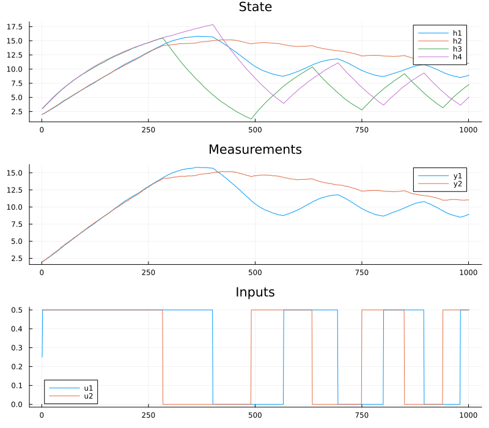
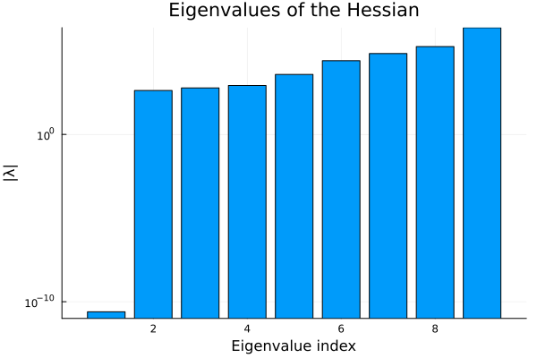

Joint estimation of plant parameters and noise covariances
The tutorial Prediction-Error minimization using an optimizer estimates the parameters of a model while the noise covariance matrices of the state estimator are held fixed, and the tutorial Estimating noise covariances estimates the covariance matrices of a model with known parameters. In practice, both the plant parameters and the covariance matrices are often unknown. The covariance matrices determine the gain of the state estimator, and thereby the one-step predictions on which a prediction-error criterion is based. A prediction-error estimate of the plant parameters thus depends on the assumed covariance matrices. Maximizing the likelihood of the data with respect to the plant parameters and the covariance matrices simultaneously removes this dependence, and yields covariance matrices that are consistent with the estimated model. This tutorial demonstrates this joint maximum-likelihood estimation, together with
- an analysis of the uncertainty and the practical identifiability of the estimated parameters using the Hessian of the negative log-likelihood, and
- estimation using data from several experiments.
Setup
We use the quadruple-tank process from the tutorial Prediction-Error minimization using an optimizer, where all parameters of the dynamics are taken from the parameter vector p. The tank areas A and the outlet areas a of the four tanks are equal.
using LowLevelParticleFilters
using LowLevelParticleFilters: SimpleMvNormal
using SeeToDee
using StaticArrays
using Plots, LinearAlgebra, Random
using LeastSquaresOptim, ForwardDiff
const LLPF = LowLevelParticleFilters
function quadtank(h, u, p, t)
k1, k2, g = p[1], p[2], 9.81
A1 = A3 = A2 = A4 = p[3]
a1 = a3 = a2 = a4 = p[4]
γ1 = γ2 = p[5]
ssqrt(x) = √(max(x, zero(x)) + 1e-3) # For numerical robustness at x = 0
SA[
-a1/A1 * ssqrt(2g*h[1]) + a3/A1*ssqrt(2g*h[3]) + γ1*k1/A1 * u[1]
-a2/A2 * ssqrt(2g*h[2]) + a4/A2*ssqrt(2g*h[4]) + γ2*k2/A2 * u[2]
-a3/A3*ssqrt(2g*h[3]) + (1-γ2)*k2/A3 * u[2]
-a4/A4*ssqrt(2g*h[4]) + (1-γ1)*k1/A4 * u[1]
]
end
Ts = 1 # sample time
nu = 2 # number of control inputs
nx = 4 # number of state variables
ny = 2 # number of measured outputs
measurement(x,u,p,t) = SA[x[1], x[2]]
discrete_dynamics = SeeToDee.Rk4(quadtank, Ts)
p_true = [1.6, 1.6, 4.9, 0.03, 0.2] # k1, k2, A, a, γThe data is simulated with an UnscentedKalmanFilter, which adds dynamics noise to the levels of all four tanks, and measurement noise with correlated components to the measured levels of the two lower tanks.
Tperiod = 200
t = 0:Ts:1000
u1 = vcat.(0.25 .* sign.(sin.(2pi/Tperiod .* (t ./ 40).^2)) .+ 0.25)
u2 = vcat.(0.25 .* sign.(sin.(2pi/Tperiod .* (t ./ 40).^2 .+ pi/2)) .+ 0.25)
u = SVector{nu}.(vcat.(u1,u2))
x0 = SA[2.0, 2, 3, 3] # Initial state
R0 = SMatrix{nx,nx}(0.01I(nx)) # Covariance of the initial state
d0 = SimpleMvNormal(x0, R0)
σw_true = 0.008
R1_true = SMatrix{nx,nx}(σw_true^2*I(nx))
R2_true = SA[1.0e-4 0.6e-4; 0.6e-4 2.5e-4]
ukf_true = UnscentedKalmanFilter(discrete_dynamics, measurement, R1_true, R2_true, d0; ny, nu, Ts, p=p_true)
x, u, y = simulate(ukf_true, u, p_true)
plot(
plot(reduce(hcat, x)', title="State", label=["h1" "h2" "h3" "h4"]),
plot(reduce(hcat, y)', title="Measurements", label=["y1" "y2"]),
plot(reduce(hcat, u)', title="Inputs", label=["u1" "u2"]),
layout = (3,1), size = (800, 700),
)
Parameterization
All quantities are collected in a single vector $θ$ of unconstrained decision variables:
- The logarithms of the five plant parameters, which are all positive.
- The logarithm of the standard deviation $σ_w$ of the dynamics noise. Since the four tanks are identical, the same standard deviation is used for all tanks, i.e., $R_1 = σ_w^2 I$. When a separate standard deviation is estimated for each tank, the standard deviations of the noise acting on the unmeasured upper tanks are only weakly determined by the data, and the corresponding eigenvalues of the Hessian of the negative log-likelihood are close to zero. Using physical reasoning to reduce the number of covariance parameters is thus beneficial, see also Estimating noise covariances.
- A log-Cholesky parameterization of the full $2×2$ measurement covariance matrix $R_2$, see
LowLevelParticleFilters.cov_from_logchol. Any vector of three real numbers maps to a positive-definite matrix, and correlations of either sign can be represented.
The function filter_from_parameters constructs a filter from the parameter vector. The element type of the initial state distribution is converted to the element type of $θ$ such that the filter can propagate the dual numbers used by ForwardDiff to compute derivatives.
np = length(p_true)
function unpack(θ)
p = exp.(θ[1:np])
R1 = exp(2θ[np+1])*SMatrix{nx,nx}(I(nx))
R2 = LLPF.cov_from_logchol(θ[np+2:end], Val(ny))
p, R1, R2
end
function filter_from_parameters(θ::AbstractVector{T}, d0 = d0) where T
p, R1, R2 = unpack(θ)
UnscentedKalmanFilter(discrete_dynamics, measurement, R1, R2, SimpleMvNormal(T.(d0.μ), T.(d0.Σ)); ny, nu, Ts, p)
end
θ_true = [log.(p_true); log(σw_true); LLPF.logchol_from_cov(R2_true)]
p_guess = p_true .* exp.(0.1 .* randn(np))
θ0 = [log.(p_guess); log(0.05); LLPF.logchol_from_cov(SMatrix{ny,ny}(1e-3I(ny)))]Maximum-likelihood estimation using Gauss-Newton optimization
With the keyword argument loglik = true, the function LowLevelParticleFilters.prediction_errors! computes residuals $r$ such that $r^T r = -\log p(y | θ) + c$ for a constant $c$. For each time step, the residuals consist of the prediction errors whitened by the Cholesky factor of the innovation covariance $S$, and one additional residual $\sqrt{\frac{1}{2}(\log\det S + n_y \log 2π) + \text{offset}}$ that represents the log-determinant term of the likelihood. The innovation covariance is small in this example, $\log\det S$ is thus negative, and a positive offset is required for the expression inside the square root to be non-negative. The offset adds the constant length(y)*offset to the cost and does not affect the location of the optimum. If the offset is too small, prediction_errors! throws an error that states the required magnitude.
During the optimization, the optimizer may evaluate parameter values for which the covariance matrix of the state estimator is no longer positive definite. The residual function below handles this case by returning infinite residuals, which causes the optimizer to reject the step, while all other errors are rethrown.
offset = 10
function residuals!(r, θ)
kf = filter_from_parameters(θ)
try
LLPF.prediction_errors!(r, kf, u, y; loglik=true, offset)
catch err
err isa PosDefException || rethrow()
r .= Inf
end
r
end
output_length = length(y)*(ny+1)
res = optimize!(LeastSquaresProblem(; x = copy(θ0), f! = residuals!, output_length, autodiff = :forward), LevenbergMarquardt())
θ̂ = res.minimizer
p̂, R1̂, R2̂ = unpack(θ̂)
p̂5-element Vector{Float64}:
1.6082656998394622
1.58369748797587
4.888531655028495
0.02980930732037266
0.203582325181345The estimated standard deviation of the dynamics noise and the estimated measurement covariance matrix are close to the values used to simulate the data:
sqrt(R1̂[1]), σw_true(0.008226299858133548, 0.008)R2̂, R2_true([0.0001041997823218092 5.86933463623558e-5; 5.86933463623558e-5 0.0002465078395892282], [0.0001 6.0e-5; 6.0e-5 0.00025])The estimated plant parameters, on the other hand, deviate from the true values. The next section shows that the data do not determine all plant parameters.
Practical identifiability from the Hessian
The curvature of the negative log-likelihood at the estimate indicates how well each direction in the parameter space is determined by the data. Since $r^T r = -\log p(y|θ) + c$, the Hessian of the negative log-likelihood is approximated by the Gauss-Newton approximation $H ≈ 2J^TJ$, where $J$ is the Jacobian of the residuals with respect to $θ$.
J = ForwardDiff.jacobian(residuals!, zeros(output_length), θ̂)
H = 2Symmetric(J'J)
E = eigen(H)
bar(abs.(E.values), yscale=:log10, xlabel="Eigenvalue index", ylabel="|λ|", title="Eigenvalues of the Hessian", legend=false)
The smallest eigenvalue is zero to numerical precision. The corresponding eigenvector reveals which combination of parameters is undetermined:
round.(E.vectors[:, 1], digits=3)9-element Vector{Float64}:
0.5
0.5
0.5
0.5
0.0
-0.0
0.0
0.0
0.0The eigenvector is $[1, 1, 1, 1, 0]/2$ in the coordinates $\log k_1, \log k_2, \log A, \log a, \log γ$, with zero components for the noise parameters. The tank area $A$ appears in the dynamics only in the ratios $k_1/A$, $k_2/A$ and $a/A$, and the measurements are the levels of the tanks. Multiplying $k_1, k_2, A$ and $a$ by a common factor therefore leaves the model unchanged, and only the ratios can be estimated from input-output data. This is a structural non-identifiability, which can also be detected from the model equations alone, see Identifiability. Eigenvalues that are small but nonzero indicate directions that are determined by the model structure but only weakly by the available data, i.e., a lack of practical identifiability, which may be remedied by a different experiment or by more data. The ratios of the parameters are accurately estimated:
ratios(p) = [p[1]/p[3], p[2]/p[3], p[4]/p[3], p[5]]
ratios(p̂) ./ ratios(p_true)4-element Vector{Float64}:
1.0075241510796036
0.9921329959962858
0.9959746346300015
1.017911625906725A structural non-identifiability is resolved by additional information. Here, we assume that the tank area $A$ has been measured, fix it to its true value, and estimate the remaining parameters.
A_fixed = p_true[3]
free = [1, 2, 4, 5] # Indices of the estimated plant parameters
function unpack_fixed(θ)
q = exp.(θ[1:4])
p = [q[1], q[2], A_fixed, q[3], q[4]]
R1 = exp(2θ[5])*SMatrix{nx,nx}(I(nx))
R2 = LLPF.cov_from_logchol(θ[6:end], Val(ny))
p, R1, R2
end
function filter_fixed(θ::AbstractVector{T}, d0 = d0) where T
p, R1, R2 = unpack_fixed(θ)
UnscentedKalmanFilter(discrete_dynamics, measurement, R1, R2, SimpleMvNormal(T.(d0.μ), T.(d0.Σ)); ny, nu, Ts, p)
end
function residuals_fixed!(r, θ)
kf = filter_fixed(θ)
try
LLPF.prediction_errors!(r, kf, u, y; loglik=true, offset)
catch err
err isa PosDefException || rethrow()
r .= Inf
end
r
end
θ0f = θ0[[free; np+1:end]]
θ_true_f = θ_true[[free; np+1:end]]
resf = optimize!(LeastSquaresProblem(; x = copy(θ0f), f! = residuals_fixed!, output_length, autodiff = :forward), LevenbergMarquardt())
θ̂f = resf.minimizer
p̂f, R1̂f, R2̂f = unpack_fixed(θ̂f)
p̂f5-element Vector{Float64}:
1.612038856061264
1.587412969342353
4.9
0.029879242407948023
0.20358244768955458The condition number of the Hessian is reduced from
cond(H)9.6751204583128e16to
Jf = ForwardDiff.jacobian(residuals_fixed!, zeros(output_length), θ̂f)
Hf = 2Symmetric(Jf'Jf)
cond(Hf)5744.387333233637Parameter uncertainty
At the maximum-likelihood estimate, the inverse of the Hessian of the negative log-likelihood approximates the covariance matrix of the estimate. Since the parameters are logarithms, the standard deviations of the plant parameters in $θ$ approximate the relative standard deviations of the plant parameters. The Gauss-Newton approximation neglects the second derivatives of the residuals. We compare it with the exact Hessian, computed by differentiating the log-likelihood twice using ForwardDiff:
negloglik(θ) = -loglik(filter_fixed(θ), u, y)
H_exact = ForwardDiff.hessian(negloglik, θ̂f)
σ_gn = sqrt.(diag(inv(Hf)))
σ_exact = sqrt.(diag(inv(Symmetric(H_exact))))
names_θ = ["log k1", "log k2", "log a", "log γ", "log σw", "R2 θ1", "R2 θ2", "R2 θ3"]
[names_θ σ_gn σ_exact]8×3 Matrix{Any}:
"log k1" 0.00653355 0.00652651
"log k2" 0.00951515 0.00954692
"log a" 0.0063179 0.00632864
"log γ" 0.0153428 0.015376
"log σw" 0.0440746 0.0424627
"R2 θ1" 0.0422777 0.036186
"R2 θ2" 0.000657997 0.000651815
"R2 θ3" 0.0384685 0.0314458The Gauss-Newton approximation is accurate for the plant parameters, and less accurate for some of the noise parameters, for which the residuals of the log-determinant term depend nonlinearly on the parameters. The estimation errors, normalized by the standard deviations, are of the magnitude expected from the estimated uncertainty:
(θ̂f .- θ_true_f) ./ σ_exact8-element Vector{Float64}:
1.1485638252007797
-0.8272827129851941
-0.6373211808309964
1.154639856732127
0.6562578450897135
0.5632871875371481
-0.38385967654576947
-0.03497529470283698This uncertainty estimate relies on the model being correct and the estimate being close to the optimum. When the Hessian is singular or poorly conditioned, as in the previous section before fixing $A$, its inverse is not a meaningful covariance estimate.
Comparison with prediction-error minimization using fixed covariance matrices
For comparison, we estimate the plant parameters by minimizing the sum of squared prediction errors with fixed, and incorrect, covariance matrices. Two choices of $R_1$ are considered: a large $R_1$, for which the filter follows the measurements closely, and a very small $R_1$, for which the filter approaches a simulation of the model and the criterion approaches a simulation-error criterion.
function pem_estimate(R1_assumed, R2_assumed)
function residuals_pem!(r, θ::AbstractVector{T}) where T
q = exp.(θ)
p = [q[1], q[2], A_fixed, q[3], q[4]]
kf = UnscentedKalmanFilter(discrete_dynamics, measurement, R1_assumed, R2_assumed, SimpleMvNormal(T.(x0), T.(R0)); ny, nu, Ts, p)
LLPF.prediction_errors!(r, kf, u, y, p)
end
resp = optimize!(LeastSquaresProblem(; x = θ0f[1:4], f! = residuals_pem!, output_length = length(y)*ny, autodiff = :forward), LevenbergMarquardt())
exp.(resp.minimizer)
end
R2_assumed = SMatrix{ny,ny}(1e-4I(ny))
q_large = pem_estimate(SMatrix{nx,nx}(0.1I(nx)), R2_assumed)
q_small = pem_estimate(SMatrix{nx,nx}(1e-8I(nx)), R2_assumed)
relative_error(q) = norm(log.(q) .- log.(p_true[free]))
[relative_error(q_large), relative_error(q_small), relative_error(p̂f[free])]3-element Vector{Float64}:
0.0316988926542181
0.041224393022920046
0.021213966521037013The two prediction-error estimates differ from each other, since the predictor, and thereby the criterion, depends on the assumed covariance matrices. The prediction-error criterion is furthermore invariant to a common scaling of $R_1$ and $R_2$, since the gain of the state estimator depends only on their relative magnitude, and the absolute magnitude of the covariance matrices can thus not be estimated by this criterion. The maximum-likelihood estimate, shown last, does not depend on such a choice, and in addition provides the covariance matrices and the uncertainty estimate above.
Data from several experiments
A single experiment may not excite all aspects of the dynamics. In the experiments below, the first experiment excites only pump 1 and the second experiment excites only pump 2, and each experiment starts from a different initial state. The residuals of the experiments are stored in consecutive blocks of the residual vector, and each experiment uses its own initial state distribution.
function experiment(u1fun, u2fun, x0e, N)
ue = [SA[u1fun(k), u2fun(k)] for k in 1:N]
d0e = SimpleMvNormal(x0e, R0)
ukfe = UnscentedKalmanFilter(discrete_dynamics, measurement, R1_true, R2_true, d0e; ny, nu, Ts, p=p_true)
_, ue, ye = simulate(ukfe, ue, p_true)
(; u = ue, y = ye, d0 = d0e)
end
square(k) = 0.25*sign(sin(2pi*k/150)) + 0.25
experiments = [
experiment(square, k->0.0, SA[1.0, 1.0, 1.5, 1.5], 500),
experiment(k->0.0, square, SA[2.0, 2.0, 1.0, 1.0], 500),
]
function residuals_multi!(r, θ, experiments)
i0 = 0
for e in experiments
n = length(e.y)*(ny+1)
kf = filter_fixed(θ, e.d0)
try
LLPF.prediction_errors!(@view(r[i0+1:i0+n]), kf, e.u, e.y; loglik=true, offset)
catch err
err isa PosDefException || rethrow()
r .= Inf
end
i0 += n
end
r
end
output_length_multi(experiments) = sum(length(e.y) for e in experiments)*(ny+1)
resm = optimize!(LeastSquaresProblem(; x = copy(θ0f), f! = (r, θ)->residuals_multi!(r, θ, experiments), output_length = output_length_multi(experiments), autodiff = :forward), LevenbergMarquardt())
θ̂m = resm.minimizer
unpack_fixed(θ̂m)[1]5-element Vector{Float64}:
1.5934236962484032
1.5959588732920844
4.9
0.03008571390472952
0.19928573947801362The smallest eigenvalue of the Hessian is zero for each individual experiment, since the gain $k_i$ of a pump that is not used does not influence the data, while the combined data determines all parameters:
map((experiments[1:1], experiments[2:2], experiments)) do exps
Jm = ForwardDiff.jacobian((r, θ)->residuals_multi!(r, θ, exps), zeros(output_length_multi(exps)), θ̂m)
minimum(eigvals(2Symmetric(Jm'Jm)))
end(0.0, 0.0, 402.84396015563374)The likelihood of independent experiments is the product of the likelihoods of the individual experiments, which corresponds to the concatenation of the residual vectors above. Concatenating the data sequences of different experiments in time, and filtering them as one sequence, is not valid unless the state at the end of one experiment coincides with the initial state of the next.
Initialization and global search
The optimization problem is in general not convex, and a local optimizer, such as the Gauss-Newton method used above, converges to a local optimum close to the initial guess. The following strategies reduce the risk of converging to a poor local optimum:
- Start the local optimizer from several initial guesses (multi-start), and select the solution with the largest likelihood.
- Use a global optimizer, e.g., from BlackBoxOptim.jl or Optimization.jl, with narrow bounds on the decision variables derived from physical knowledge, and refine the result with the Gauss-Newton method.
- Use continuation in the covariance parameters. With a large dynamics noise covariance relative to the measurement noise covariance, the state estimator follows the measurements closely, and the one-step predictions are reasonable also for a poor initial guess of the plant parameters. Starting with fixed covariance matrices of this kind, estimating the plant parameters, and then estimating all parameters jointly starting from this solution, is often more robust than estimating all parameters at once. The function
nonlinear_pemin ControlSystemIdentification.jl supports such continuation by restarting from a previous result with new covariance matrices.